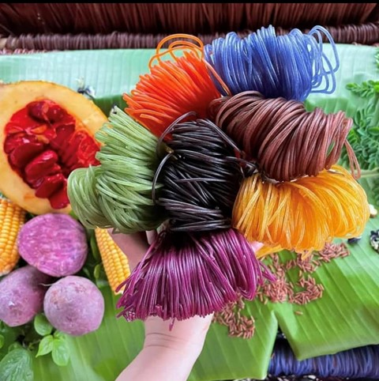
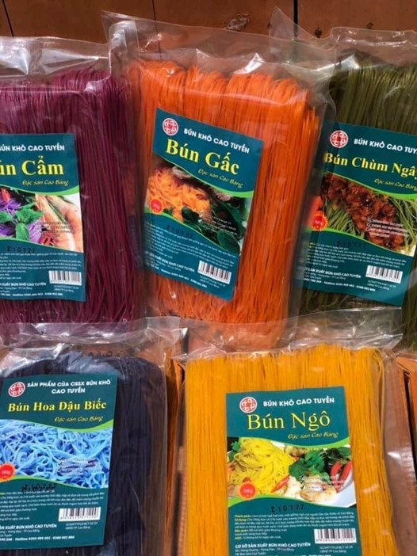
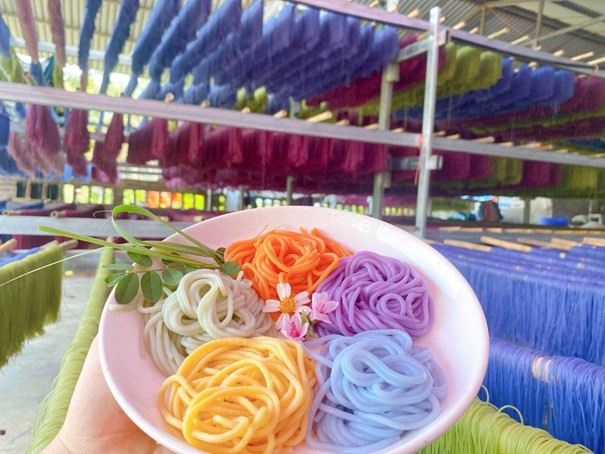
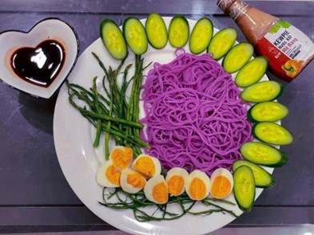
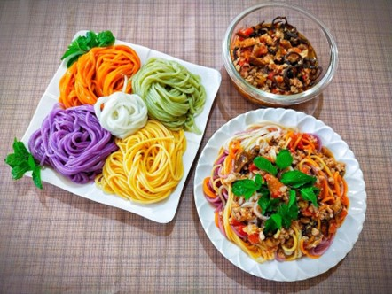

Bún ngô ngũ sắc
- Bún khô Cao Bằng được làm theo bí quyết gia truyền nên sợi bún khi luộc lên mềm như bún tươi, không gãy, ăn không ngán, có thể chế biến nhiều món như kèm với canh xương, bún xào, bún ốc và ngon nhất là bún trộn với các nguyên liệu hành, giò, rau củ.
- Quá trình luộc bún, người sử dụng chú ý ngâm với nước 10 phút, sau đó thả vào nước đun sôi khoảng 5 phút, rồi tắt lửa cho bún đạt độ mềm mong muốn, rửa sạch lại với nước và bắt đầu chế biến các món ăn ưa thích.
- Hiện nay, Cao Bằng không chỉ có bún khô ngũ sắc mà còn được chế biến thêm thành 8 màu với hương vị độc đáo tạo được sức hút riêng, tiếng đồn vang xa với khách hàng ở các tỉnh, thành phố trên cả nước.
- Đây là 3 lý do nên chọn bún ngũ sắc cho gia đình. Để giúp quý khách hàng thấy rõ hơn về những lợi ích, vì sao nên sử dụng thực phẩm này. Cùng điểm qua những lý do sau:
+ Thứ nhất, màu sắc đẹp, tạo độ hấp dẫn cho món ăn: Một món ăn ngon đến từ nhiều yếu tố, trong đó một màu sắc đẹp là khá quan trọng để kích thích vị giác người dùng. Đặc biệt những gia đình có trẻ em thì đây là lựa chọn rất lý tưởng. Trẻ em lười ăn rau nhưng lại thích màu sắc, vì vậy món ăn nhiều màu này sẽ khiến trẻ bị thu hút và muốn được ăn. Sản phẩm bún ngũ sắc không chỉ đẹp mà còn giàu giá trị dinh dưỡng. Năm màu của bún ngũ sắc với củ dền (lá cẩm), chùm ngây xanh, mè đen, khoai lang tím, đậu biết, bắp hay bí đỏ vàng tươi sẽ tạo nên một vườn rau đầy màu sắc và hương vị để cả gia đình sẽ có những trải nghiệm thú vị.
+ Thứ hai, sản phẩm chứa nhiều dinh dưỡng tốt cho sức khỏe:
• Với bún chùm ngây, sản phẩm chứa nhiều vi chất thiết yếu cho cơ thể như chất xơ, sắt, canxi, phốt pho, kali …và có tính mát. Sử dụng sẽ giúp tiêu hóa tốt, bổ sung dưỡng chất cho cơ thể phát triển lành mạnh.
• Đối với bún mè đen, sản phẩm này khá giàu chất xơ và các khoáng chất như kali, canxi, phốt pho, magie và các loại vitamin B6, axit folic…Nhờ đó sẽ rất có lợi cho hệ tiêu hóa, những người tiểu đường.
• Bún hoa đậu biếc với màu tím bắt mắt, sản phẩm còn chứa nhiều hợp chất hữu cơ như anthocyanin và cliotide, đây là những yếu tố giúp tăng sức đề kháng cho cơ thể.
• Còn trong bún củ dền, chúng ta có thể tìm thấy một lượng sắt dồi dào, giúp ngăn ngừa tình trạng thiếu máu do thiếu sắt.
+ Thứ ba là thành phần an toàn, tự nhiên: Bún ngũ sắc được tạo ra bởi gạo và rau củ quả. Nguồn nguyên liệu đầu vào được kiểm soát chặt chẽ từ khâu chọn giống, đất trồng đến thu hoạch và sản xuất. Cộng với việc chế biến sạch sẽ, đảm bảo giữ nguyên giá trị dinh dưỡng và độ ngon ngọt. Vậy thì không có lý do gì để bỏ qua sản phẩm đầy hữu ích này.